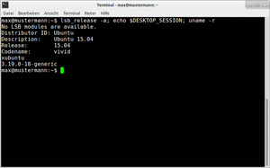

Xfce Programme
Dieser Artikel wurde für die folgenden Ubuntu-Versionen getestet:
Ubuntu 14.04 Trusty Tahr
Zum Verständnis dieses Artikels sind folgende Seiten hilfreich:
Nachfolgend eine alphabetische Liste von Programmen, die bei Xfce mitliefert werden. Daneben gibt es noch eine weitere Liste mit empfehlenswerten Anwendungen.
Mousepad¶
Mousepad ist der Standard-Editor unter Xfce. Die vorhandenen Funktionen sind zwar ausreichend, aber relativ beschränkt - für mehr Komfort siehe Editoren.
Parole¶
Parole (frz. für das Sprechen, die Sprache, die Rede) ist ein Medienplayer für Xfce, der auf GStreamer zurückgreift. Neben der Wiedergabe diverser Audio- und Videoformate unterstützt das Programm Internetradio (Live Streams) und das Abspielen optischer Medien. Darüber hinaus ist es der Nachfolger von Xfmedia und damit der neue Standard-Videoplayer von Xfce.
Terminal¶
|  |
| Terminal |
Terminal ist ein moderner Terminalemulator und Standard bei Xfce und Xubuntu. Das Programm ist leicht zu bedienen und braucht sich nicht vor anderen Terminals zu verstecken. Es bietet unter anderem:
Tabs
Schnellwahl-Tasten
Verknüpfung mit bevorzugten Anwendungen
Farbauswahl (Text/Cursor/Hintergrund)
transparenten Hintergrund oder ein Hintergrundbild
Ab Version 0.6.1 bzw. Ubuntu 13.04: ein Dropdown-Modus wie bei Guake, Tilda oder Yakuake kann über den Parameter
--drop-downaktiviert werden
Weitere Optionen sind in der Manpage zum Programm zu finden und einige versteckte Einstellungen in der offiziellen Dokumentation unter apps/terminal/advanced  .
.
Installation¶
Folgende Pakete müssen installiert [1] werden:
xfce4-terminal
 mit apturl
mit apturl
Paketliste zum Kopieren:
sudo apt-get install xfce4-terminal
sudo aptitude install xfce4-terminal
Nach erfolgreicher Installation ist das Programm unter "Zubehör -> Terminal" zu finden. Alternativ kann es über den Befehl:
xfce4-terminal
gestartet werden.
Problembehebung¶
Terminal erzeugt Zombie-Prozess¶
Aufgrund des Fehlers 996484 wird beim Aufruf von Terminal ein Zombie-Prozess erzeugt, der mittels des Befehls [3]:
ps -el | grep Z
angezeigt werden kann:
F S UID PID PPID C PRI NI ADDR SZ WCHAN TTY TIME CMD 1 Z 1000 3021 3020 0 80 0 - 0 exit ? 00:00:00 xfce4-terminal <defunct>
Abhilfe schafft die einmalige Eingabe von:
sudo ln -s /usr/lib/libvte9 /usr/lib/vte
Zur Kontrolle ab- und neu anmelden und den ps-Befehl wiederholen.

Xarchiver¶
Xarchiver ist ein Programm zum Entpacken und Packen von Archiven. Es basiert nur auf GTK2 und braucht sonst keine Extra-Pakete. Die vorhandenen Funktionen sind übersichtlich und einfach zu benutzen. Folgende Formate werden unterstützt: ARJ, BZ2, GZ, 7z, RAR, TAR, ZIP und RPM. Darüber hinaus werden passwortgeschützte Archive der Formate ZIP, RAR, ARJ und 7z automatisch erkannt. Zur Betrachtung von Textdateien innerhalb eines Archives wird kein externer Editor benötigt.
Xfburn¶
Xfburn ist ein einfaches Brennprogramm für CDs und DVDs. Mit dem Programm ist es möglich, Daten- und Audio-CDs zu erstellen, CD-RWs zu löschen, CDs/DVDs zu kopieren sowie .iso-Dateien zu brennen. Ab Xubuntu 10.10 löst Xfburn das langjährige Standardprogramm Brasero zum Brennen von CDs und DVDs ab, unter Lubuntu ist es ebenfalls bereits vorinstalliert.
 Übersichtsartikel
Übersichtsartikel- Erstellt mit Inyoka
-
 2004 – 2017 ubuntuusers.de • Einige Rechte vorbehalten
2004 – 2017 ubuntuusers.de • Einige Rechte vorbehalten
Lizenz • Kontakt • Datenschutz • Impressum • Serverstatus -
Serverhousing gespendet von